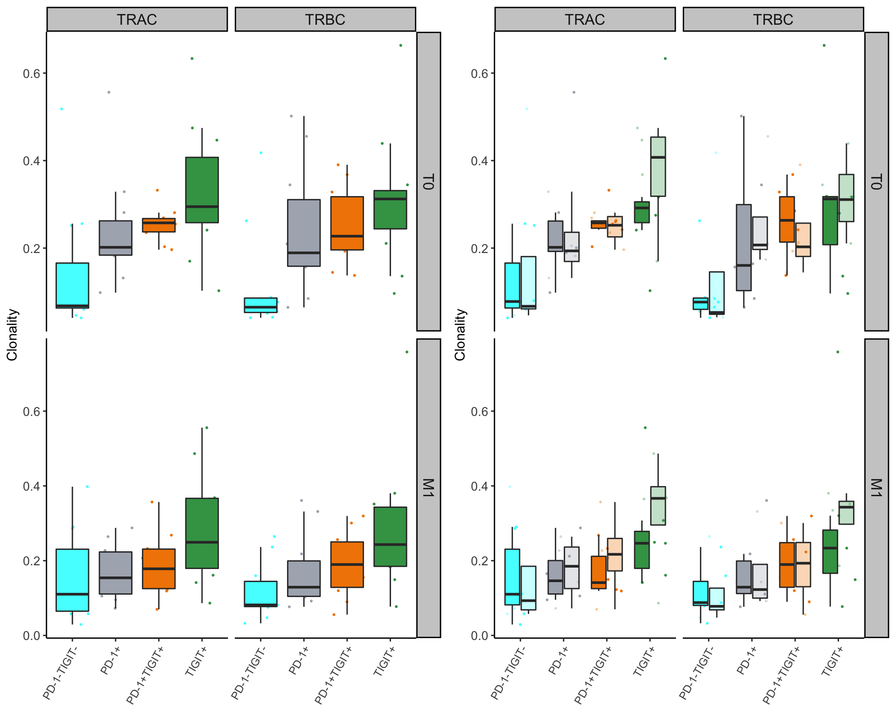

- TCR-seq - EDA -
Last updated: 2020-01-15
Checks: 7 0
Knit directory: Simon_et_al_2020/
This reproducible R Markdown analysis was created with workflowr (version 1.6.0). The Checks tab describes the reproducibility checks that were applied when the results were created. The Past versions tab lists the development history.
Great! Since the R Markdown file has been committed to the Git repository, you know the exact version of the code that produced these results.
Great job! The global environment was empty. Objects defined in the global environment can affect the analysis in your R Markdown file in unknown ways. For reproduciblity it’s best to always run the code in an empty environment.
The command set.seed(20200113) was run prior to running the code in the R Markdown file. Setting a seed ensures that any results that rely on randomness, e.g. subsampling or permutations, are reproducible.
Great job! Recording the operating system, R version, and package versions is critical for reproducibility.
Nice! There were no cached chunks for this analysis, so you can be confident that you successfully produced the results during this run.
Great job! Using relative paths to the files within your workflowr project makes it easier to run your code on other machines.
Great! You are using Git for version control. Tracking code development and connecting the code version to the results is critical for reproducibility. The version displayed above was the version of the Git repository at the time these results were generated.
Note that you need to be careful to ensure that all relevant files for the analysis have been committed to Git prior to generating the results (you can use wflow_publish or wflow_git_commit). workflowr only checks the R Markdown file, but you know if there are other scripts or data files that it depends on. Below is the status of the Git repository when the results were generated:
Ignored files:
Ignored: .DS_Store
Ignored: .Rhistory
Ignored: .Rproj.user/
Ignored: analysis/.Rhistory
Ignored: code/.Rhistory
Ignored: data/.DS_Store
Ignored: output/.DS_Store
Ignored: output/.Rhistory
Untracked files:
Untracked: analysis/2019-02-22_RNA-seq_DE_1.Rmd
Untracked: analysis/2019-02-22_RNA-seq_DE_2.Rmd
Untracked: analysis/2019-02-22_RNA-seq_DE_3.Rmd
Untracked: data/RNA/
Untracked: data/TCR/
Untracked: data/clinical-data/
Untracked: data/gene-sets/
Untracked: misc/
Untracked: output/2019-02-22_RNA-seq_DE_1.RData
Untracked: output/2019-02-27_TCR-seq_QC.RData
Untracked: output/2019-02-28_TCR-seq_EDA.RData
Untracked: output/2020-01-12_TCR-seq_EDA_2.RData
Untracked: output/RNA_count.rds
Untracked: output/RNA_raw_count.rds
Untracked: output/TCR_count.rds
Untracked: output/TCR_pData.rds
Untracked: output/output_2019-02-22/
Note that any generated files, e.g. HTML, png, CSS, etc., are not included in this status report because it is ok for generated content to have uncommitted changes.
These are the previous versions of the R Markdown and HTML files. If you’ve configured a remote Git repository (see ?wflow_git_remote), click on the hyperlinks in the table below to view them.
| File | Version | Author | Date | Message |
|---|---|---|---|---|
| Rmd | d9398bc | ValentinVoillet | 2020-01-15 | Edits .Rmd (TCR-seq_EDA_2) |
| html | 7145ac8 | ValentinVoillet | 2020-01-14 | Add .html files |
| Rmd | 49f6c61 | ValentinVoillet | 2020-01-14 | Edits .Rmd (TCR-seq_EDA_2) |
| Rmd | 99d00e5 | ValentinVoillet | 2020-01-14 | Edits .Rmd (TCR-seq_EDA_2) |
File creation: January, 12th 2020
Update: January, 14th 2020
1 Description & importing data
RNA was extracted from 12 patients. Alignment and quantification of TCR sequences have been performed by QIAGEN
12 patients: P5, P6, P7, P8, P14, P15, P16, P18, P19, P21, P22 and P23;
Four time points: T0, M1, M2 & M6;
One treatment: anti-PD1;
Four fractions: PD-1+TIGIT+, PD-1+, TIGIT+ and PD-1-TIGIT-;
Two outcomes: NR and R;
Three batches.
QC have already been performed - please look at the TCR-QC section. Fourteen samples have been removed.
###--- Importation
#- TCR.pData
here("output", "TCR_pData.rds") %>%
readRDS() -> TCR.pData
# pData (patient/fraction w/ at least T0 & M1)
TCR.pData %>% select(patient.id, time.point, fraction, outcome) %>% View("pData")
TCR.pData <- TCR.pData[c(1:39, 41:43, 45:114, 117:120, 123:125, 127, 130, 132, 135:146, 148:154, 157:158), ]
TCR.pData %>% filter(time.point != "M2" & time.point != "M6") -> TCR.pData
TCR.pData %>%
arrange(patient.id) %>%
select(patient.id, time.point, fraction, outcome) %>%
View("pData")
#- TCR.exprs
here("output", "TCR_count.rds") %>%
readRDS() %>%
filter(QIAGEN.id %in% TCR.pData$QIAGEN.id) -> TCR.exprs2 Summary statistics
The clonality score is derived from the Shannon entropy, which is calculated from the frequencies of all productive sequences divided by the logarithm of the total number of unique productive sequences. This normalized entropy value is then inverted (1 - normalized entropy) to produce the clonality metric.
The Gini coefficient is an alternative metric used to calculate repertoire diversity.
Both Gini coefficient and clonality are reported on a scale from 0 to 1 where 0 indicates all sequences have the same frequency and 1 indicates the repertoire is dominated by a single sequence.
###--- Extracting productive sequences - aggregate samples having the same cdr3aa, cdr3nt and V/J-regions
TCR.exprs %>%
group_by(QIAGEN.id, chain, cdr3nt, cdr3aa, `V-region`, `J-region`) %>%
summarise(frequency = sum(freq.after.filtering),
`UMIs with >= 1 reads` = sum(`UMIs with >= 1 reads`),
`UMIs with >= 2 reads` = sum(`UMIs with >= 2 reads`),
`UMIs with >= 3 reads` = sum(`UMIs with >= 3 reads`),
`UMIs with >= 4 reads` = sum(`UMIs with >= 4 reads`),
`UMIs with >= 5 reads` = sum(`UMIs with >= 5 reads`),
`UMIs with >= 6 reads` = sum(`UMIs with >= 6 reads`),
`UMIs with >= 7 reads` = sum(`UMIs with >= 7 reads`),
total.reads = sum(`# reads`),
total.UMIs = sum(total.UMIs)) %>%
arrange(QIAGEN.id, chain, desc(`UMIs with >= 1 reads`)) -> productive.aa
###--- Summary statistics
productive.aa %>%
filter(chain == "TRAC" | chain == "TRBC") %>%
group_by(QIAGEN.id, chain) %>%
summarise(total.reads = sum(total.reads),
total.UMIs = sum(total.UMIs),
unique.productive = n(),
entropy = -sum(frequency * log2(frequency), na.rm = TRUE),
gini.coef = ineq::Gini(frequency)) %>%
mutate(clonality = 1 - round(entropy / log2(unique.productive), digits = 6)) -> dt
dt <- merge(dt, TCR.pData[, c("QIAGEN.id", "sample.number", "sample.id", "treatment", "batch", "patient.id", "time.point", "fraction.desc", "outcome")], by = "QIAGEN.id")
| Version | Author | Date |
|---|---|---|
| 7145ac8 | ValentinVoillet | 2020-01-14 |
3 Clustering
Within each fraction, let"s look at sequences (both TRAC and TRBC). We declare as emerging, expanding, emerging-contracting, expanding-contracting, contracting-expanding, contracting sequences (regarding to M1) that are declared as significant (Fisher exact test to calculate differential abundance of each TRBC (or TRAC) between two time points –total.UMIs value is used) in the following contrasts T0 vs M1. Other sequences are declared as non-expanding/contracting.
3.1 PD-1+TIGIT+
3.1.11 Patient - P22
No PD-1+TIGIT+ sample (T0 & M1).
3.1.12 Patient - P23
No PD-1+TIGIT+ sample (T0 & M1).
3.2 PD-1+
3.2.2 Patient - P6
No PD-1+ sample (T0 & M1).
3.2.12 Patient - P23
No PD-1+ sample (T0 & M1).
3.3 TIGIT+

3.3.11 Patient - P22
No TIGIT+ sample (T0 & M1).
3.4 PD-1-TIGIT-

3.4.12 Patient - P23
No PD-1-TIGIT- sample (T0 & M1).
3.5 Summary
TRAC
| Version | Author | Date |
|---|---|---|
| 7145ac8 | ValentinVoillet | 2020-01-14 |
| Version | Author | Date |
|---|---|---|
| 7145ac8 | ValentinVoillet | 2020-01-14 |
Table - # of patients per fraction
Table - NR - # of patients per cluster
Table - R - # of patients per cluster
TRBC
| Version | Author | Date |
|---|---|---|
| 7145ac8 | ValentinVoillet | 2020-01-14 |
| Version | Author | Date |
|---|---|---|
| 7145ac8 | ValentinVoillet | 2020-01-14 |
Table - # of patients per fraction
Table - NR - # of patients per cluster
Table - R - # of patients per cluster
sessionInfo()R version 3.6.2 (2019-12-12)
Platform: x86_64-apple-darwin15.6.0 (64-bit)
Running under: macOS Mojave 10.14.6
Matrix products: default
BLAS: /Library/Frameworks/R.framework/Versions/3.6/Resources/lib/libRblas.0.dylib
LAPACK: /Library/Frameworks/R.framework/Versions/3.6/Resources/lib/libRlapack.dylib
Random number generation:
RNG: Mersenne-Twister
Normal: Inversion
Sample: Rounding
locale:
[1] fr_FR.UTF-8/fr_FR.UTF-8/fr_FR.UTF-8/C/fr_FR.UTF-8/fr_FR.UTF-8
attached base packages:
[1] parallel grid stats graphics grDevices utils datasets
[8] methods base
other attached packages:
[1] broom_0.5.3 doMC_1.3.6 iterators_1.0.12
[4] foreach_1.4.7 ComplexHeatmap_2.2.0 gridExtra_2.3
[7] VennDiagram_1.6.20 futile.logger_1.4.3 here_0.1
[10] data.table_1.12.8 janitor_1.2.0 forcats_0.4.0
[13] stringr_1.4.0 dplyr_0.8.3 purrr_0.3.3
[16] readr_1.3.1 tidyr_1.0.0 tibble_2.1.3
[19] ggplot2_3.2.1 tidyverse_1.3.0
loaded via a namespace (and not attached):
[1] nlme_3.1-143 fs_1.3.1 lubridate_1.7.4
[4] RColorBrewer_1.1-2 httr_1.4.1 rprojroot_1.3-2
[7] tools_3.6.2 backports_1.1.5 R6_2.4.1
[10] DBI_1.1.0 lazyeval_0.2.2 colorspace_1.4-1
[13] GetoptLong_0.1.8 withr_2.1.2 tidyselect_0.2.5
[16] compiler_3.6.2 git2r_0.26.1 cli_2.0.1
[19] rvest_0.3.5 formatR_1.7 xml2_1.2.2
[22] labeling_0.3 scales_1.1.0 digest_0.6.23
[25] rmarkdown_2.0 pkgconfig_2.0.3 htmltools_0.4.0
[28] dbplyr_1.4.2 rlang_0.4.2 GlobalOptions_0.1.1
[31] readxl_1.3.1 rstudioapi_0.10 farver_2.0.2
[34] shape_1.4.4 generics_0.0.2 jsonlite_1.6
[37] magrittr_1.5 Rcpp_1.0.3 munsell_0.5.0
[40] fansi_0.4.1 lifecycle_0.1.0 stringi_1.4.5
[43] whisker_0.4 yaml_2.2.0 plyr_1.8.5
[46] promises_1.1.0 crayon_1.3.4 lattice_0.20-38
[49] haven_2.2.0 cowplot_1.0.0 circlize_0.4.8
[52] hms_0.5.3 zeallot_0.1.0 knitr_1.26
[55] pillar_1.4.3 rjson_0.2.20 reshape2_1.4.3
[58] codetools_0.2-16 futile.options_1.0.1 reprex_0.3.0
[61] glue_1.3.1 evaluate_0.14 lambda.r_1.2.4
[64] modelr_0.1.5 png_0.1-7 vctrs_0.2.1
[67] httpuv_1.5.2 cellranger_1.1.0 gtable_0.3.0
[70] clue_0.3-57 assertthat_0.2.1 xfun_0.12
[73] later_1.0.0 viridisLite_0.3.0 ineq_0.2-13
[76] workflowr_1.6.0 cluster_2.1.0